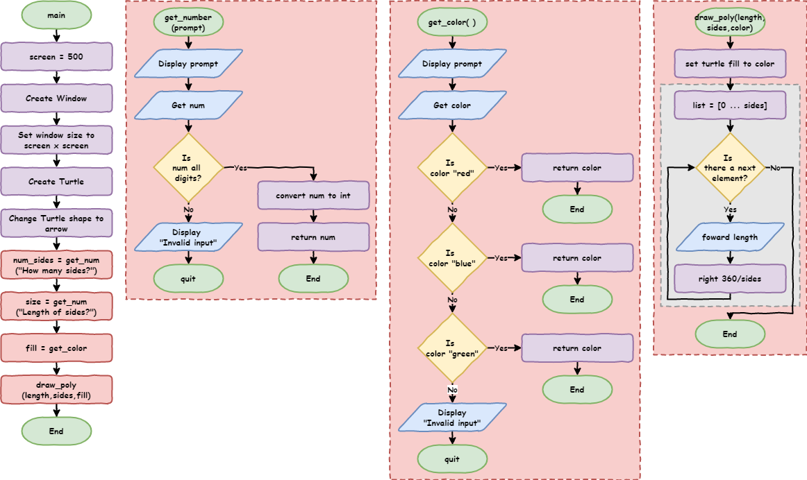
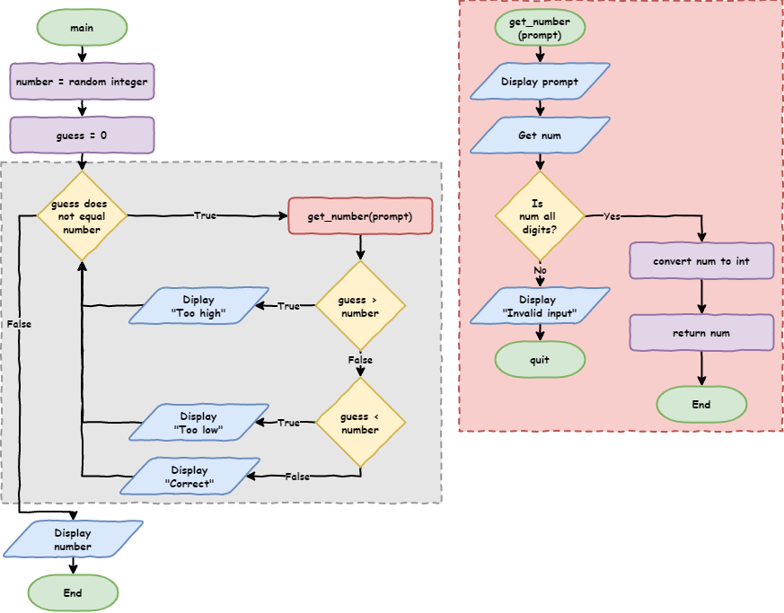
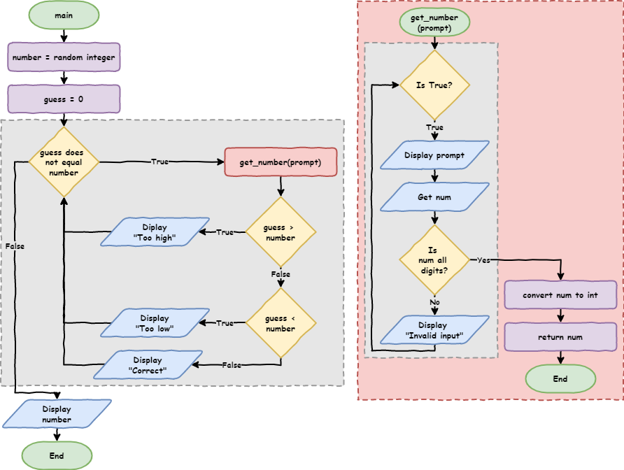

Python Turtle¶
Lesson 5
Topics
how to capturing errors
what are branching control structures (
ifstatements)how and when to use
if…elif…elsein Pythonthe difference between definite and indefinite iteration
how and when to use
whereloops in Pythonhow to generate random numbers in Python
Part 1¶
Branching
Branching control structure¶
Allows program flow to take alternative paths.
Open lesson_4_pt_2.py file → Save as lesson_5_pt_1a.py.
import turtle
def draw_poly(length, sides):
for i in range(sides):
my_ttl.forward(length)
my_ttl.right(360 / sides)
# setup window
screen = 500
window = turtle.Screen()
window.setup(screen, screen)
# create instance of turtle
my_ttl = turtle.Turtle()
my_ttl.shape("turtle")
num_sides = int(input("How many sides?> "))
size = int(input("Length of sides?> "))
draw_poly(size, num_sides)
Run the program, → enter dog.
Traceback (most recent call last):
File "<string>", line 19, in <module>
ValueError: invalid literal for int() with base 10: 'dog'
num_sides = int(input("How many sides?> "))
trying to convert
dogin integerdogis not a whole number → error
Need to checkuser has entered a whole number
New file → Save as lesson_5_pt_1b.py
user_value = input("Enter a number: ")
print(user_value.isdigit())
Predict for two runs of the code:
first → enter
10second → enter
dog
Run the code. Did it follow your predictions?
Investigate the code¶
Python inputs are strings
Strings special operations (methods).
isdigit method → True when all characters are digits
Many string methods → W3Schools’ Python String Methods
Can tell input is a number → make computer respond
The if statement¶
Adjusts lesson_5_pt_1b.py
user_value = input("Enter a number: ")
if user_value.isdigit():
print("That's a number")
Predict for two runs of the code:
first → enter
10second → enter
dog
Run the code. Did it follow your predictions?
Investigate code - Flowchart¶
Condition symbol (diamond) also used for if statements

Investigate code - Breakdown¶
if user_value.isdigit():→ defines theifstatementif→ keyworduser_value.isdigit()→ conditionalreturn
TrueorFalse
:→ indented code block comingindented code block → only run when conditional returns
True
print("That's a number")will run when
user_value.isdigit()isTrue
The if … else statement¶
How to respond when user_value.isdigit() returns False?
Adjust lesson_5_pt_1b.py
user_value = input("Enter a number: ")
if user_value.isdigit():
print("That's a number")
else:
print("That's not a number")
Predict for two runs of the code:
first → enter
10second → enter
dog
Run the code. Did it follow your predictions?
Investigate code - Flowchart¶

Investigate code - Breakdown¶
else:uses
ifstatement conditionwhen
user_value.isdigit()isFalse→ run indented code block:→ indented code block coming
print("That's not a number")will run when
user_value.isdigit()returnsFalse
Use the debugger with inputs of 10 and dog
Using if … else to capture errors¶
lesson_5_pt_1a.py → adjust # get user input section
# get user input
num_sides = input("How many sides?> ")
if num_sides.isdigit():
num_sides = int(num_sides)
else:
print("Invalid input")
quit()
size = input("Length of sides?> ")
if size.isdigit():
size = int(size)
else:
print("Invalid input")
quit()
import turtle
def draw_poly(length, sides):
for i in range(sides):
my_ttl.forward(length)
my_ttl.right(360 / sides)
# setup window
screen = 500
window = turtle.Screen()
window.setup(screen, screen)
# create instance of turtle
my_ttl = turtle.Turtle()
my_ttl.shape("turtle")
# get user input
num_sides = input("How many sides?> ")
if num_sides.isdigit():
num_sides = int(num_sides)
else:
print("Invalid input")
quit()
size = input("Length of sides?> ")
if size.isdigit():
size = int(size)
else:
print("Invalid input")
quit()
draw_poly(size, num_sides)
Predict for these scenarios:
valid
sidesvalue and validsizevaluevalid
sidesvalue and invalidsizevalueinvalid
sidesvalue and validsizevalueinvalid
sidesvalue and invalidsizevalue
Run the code. Did it follow your prediction?
More testing tips
Testing branching code → test all possible paths
Test
ifstatements forTrueandFalseconditions
Investigate code - Flowchart¶

Investigate code - Breakdown¶
# get user input→ code structure commentnum_sides = input("How many sides?> ")→ user input assigned tonum_sidesif num_sides.isdigit():→ ifnum_sidesonly contains numbers execute:num_sides = int(size):converts
num_sidesvalue to integerreassigns integer to
num_sides
else:→ ifnum_sides.isdigit()returnsfalseexecute:print("Invalid input")→ informs the user of mistakequit()→ exits the program
Refactor Code - DRY¶
Does the code pass DRY test?
Definite repetition.
asks the user for input
checks if that input is all numbers
either converts or quits the program depending on the
ifstatement.
Prefect opportunity to refactor code with a function.
Refactoring → changing code without changing the way it works
efficiency → uses less computing resources
maintainability → easier to understand, fix, update and enhance
Add function:
def get_number(prompt):
num = input(prompt)
if num.isdigit():
return int(num)
else:
print("Invalid input")
quit()
Replace code in # get user input section with:
# get user input
num_sides = get_number("How many sides?> ")
size = get_number("Length of sides?> ")
import turtle
def draw_poly(length, sides):
for i in range(sides):
my_ttl.forward(length)
my_ttl.right(360 / sides)
def get_number(prompt):
num = input(prompt)
if num.isdigit():
return int(num)
else:
print("Invalid input")
quit()
# setup window
screen = 500
window = turtle.Screen()
window.setup(screen, screen)
# create instance of turtle
my_ttl = turtle.Turtle()
my_ttl.shape("turtle")
# get user input
num_sides = get_number("How many sides?> ")
size = get_number("Length of sides?> ")
draw_poly(size, num_sides)
Refactoring code → test that code still works the same
Run code → test all possible branches:
valid
sidesvalue and validsizevaluevalid
sidesvalue and invalidsizevalueinvalid
sidesvalue and validsizevalueinvalid
sidesvalue and invalidsizevalue
Investigate code - Flowchart¶

Investigate code - Breakdown¶
get_numberfunctiondef get_number(prompt):→ defines function with argumentprompt:num = input(prompt)displays
promptassigns user input to
num
if num.isdigit():→ whennumonly contains numbers executereturn int(num)converts
numvalue to integersends value to main program
ends the function
else:→ ifnumdoes not contain only numbers execute:print("Invalid input")→ informs user of errorquit()→ exit program
Investigate code - Breakdown (cont.)¶
num_sides = get_number("How many sides?> ")→ callsget_numberfunctionget_number()→ calls function"How many sides?> "→ provides prompt stringnum_sides =assigns returned value tonum_sides
size = get_number("Length of sides?> ")→ calls theget_numberfunctionget_number()→ calls the function"Length of sides?> "→ provides prompt stringsize =assigns returned value tosize
Playing with colour¶
color method → change line and fill colours
color accepts two arguments:
first argument → line colour
second argument → fill colour
def draw_poly(length, sides, color):
my_ttl.color("black", color)
my_ttl.begin_fill()
for i in range(sides):
my_ttl.forward(length)
my_ttl.right(360 / sides)
my_ttl.end_fill()
draw_poly(size, num_sides, "red")
Predict and run the code
Investigate code - breakdown¶
def draw_poly(length, sides, color):→ accept third argumentcolormy_ttl.color("black",color)→ sets the turtle colourline colour →
"black"fill colour → the value in the
colorargument
draw_poly(size, num_sides, "red")→ provide fill colour
Turtle colours → named, RBG and Hexadecimal colours
Let the user choose fill colour → red, blue or green
Need to capture the error → if statement
But if … else → only allows two branches → we need four
The if … elif … else statement¶
elif statement → else + if statement
Allows branching between multiple blocks of code
Create function to choose between red, blue and green
def get_color():
color = input("Fill colour (red, blue, green)?> ").lower()
if color == "red":
return color
elif color == "blue":
return color
elif color == "green":
return color
else:
print("Invalid input")
quit()
import turtle
def draw_poly(length, sides, color):
my_ttl.color("black", color)
my_ttl.begin_fill()
for i in range(sides):
my_ttl.forward(length)
my_ttl.right(360 / sides)
my_ttl.end_fill()
def get_number(prompt):
num = input(prompt)
if num.isdigit():
return int(num)
else:
print("Invalid input")
quit()
def get_color():
color = input("Fill colour (red, blue, green)?> ").lower()
if color == "red":
return color
elif color == "blue":
return color
elif color == "green":
return color
else:
print("Invalid input")
quit()
# setup window
screen = 500
window = turtle.Screen()
window.setup(screen, screen)
# create instance of turtle
my_ttl = turtle.Turtle()
my_ttl.shape("turtle")
# get user input
num_sides = get_number("How many sides?> ")
size = get_number("Length of sides?> ")
fill = get_color()
draw_poly(size, num_sides, fill)
Predict what will happen then run code
Investigate code¶
color = input("Fill colour (red, blue, green)?> ").lower()lower()→ string method → converts all letters to lowercase
if color == "red":→ tests if user input"red"elif color == "blue":executed when
color == "red"returnsFalsethen checks if user input
"blue"
Line 28:elif color == "green":executed when
color == "red"andcolor == "blue"both returnFalsechecks if the value of
coloris"green"
else:executed when
color == "red",color == "blue"andcolor == "green"all returnFalse

if…elif…else structure¶
ifcomponentalways at beginning
only compulsory component
only be one
if
elifcomponentafter
ifstatement and beforeelsestatementis optional
as many
elifcomponents as neededexecuted when all the prior conditions are
False
if…elif…else structure (cont.)¶
elsecomponentalways at the end
is optional
only be one
elseexecuted when all the prior conditions are
False
Exercises¶
Exercises are the make component of the PRIMM model
Complete exercises 1 to 3
Tutorial 2:¶
While Loop
Two types of loops → different types of iteration
definite iteration → count controlled
do know how many times it will loop
uses
forloops
indefinite iteration → condition controlled
don’t know how many it will loop
uses
whileloops
Card dealing analogy:
Dealing for Uno → definite iteration
Dealing for Snap → indefinite iteration
Number guessing game¶
import random
def get_number(prompt):
num = input(prompt)
if num.isdigit():
return int(num)
else:
print("Invalid input")
quit()
number = random.randint(1, 100)
guess = get_number("Guess a number between 1 and 100> ")
if guess == number:
print("Correct!")
else:
print("Incorrect. The number was", number)
Predict and run the code
What is the random module?¶
Random module → functions that produce random results
Investigate code - Breakdown¶
import random→ needed to accessrandomfunctionsget_numberfunction → same as previousnumber = random.randint(1,100)random.randint(1,100)→ random integer between1and100number =→ assign random integer tonumber
guess = get_number("Guess a number between 1 and 100> ")→ same as previousLine 17:if guess == number:==symbol → comparison operator → checks if values the same
Comparison operators¶
Comparison operator → compare two values → returns Boolean
Python’s condition testing uses many comparison operators:
Operator |
Meaning |
|---|---|
|
checks if two values are the same (equal to) |
|
checks if two values are not the same (not equal to) |
|
checks if the left value is greater than the right value |
|
checks if the left value is less than the right value |
|
checks if the left value is greater than or equal to the right value |
|
checks if the left value is less than or equal to the right value |
Not a good game → one-in-one-hundred chance of winning.
Adjust code to allow ten guesses → sounds like iteration.
What kind?
Know how many times it needs to loop (10) → definite iteration
Definite iteration → for loop
import random
def get_number(prompt):
num = input(prompt)
if num.isdigit():
return int(num)
else:
print("Invalid input")
quit()
number = random.randint(1, 100)
print("You have 10 turns to guess a number between 1 and 100")
for turn in range(10):
guess = get_number("Guess a number between 1 and 100> ")
if guess == number:
print("Correct!")
else:
print("Incorrect. Try again")
print("The number was", number)
Predict and run the code
Better but not great
One-in-ten chance and each guess is a stab in the dark.
Give the user hints → guess is too high or too low
Change if … else statement
if guess > number:
print("Guess is too high")
elif guess < number:
print("Guess is too low")
else:
print("Correct!")
A lot of coding without testing → time to test
Ensure testing cover all branches
guess is too high
guess is too low
guess is correct
all 10 guess used up without guessing the number
Predict and run for all four branches
Problem when correct before ten guesses?
prints
Correct!continues to ask for guesses
Definite iteration → has to run ten times
Need indefinite iteration → loops until the user is correct
Using a while loop¶
number = random.randint(1, 100)
guess = 0
while guess != number:
guess = get_number("Guess a number between 1 and 100> ")
if guess > number:
print("Guess is too high")
elif guess < number:
print("Guess is too low")
else:
print("Correct!")
print("The number was", number)
Predict and run code for all branches:
guess is too high
guess is too low
guess is correct
all 10 guess used up without guessing the number
while guess != number:→ createwhileloopguess != number→ loop conditionwhen
guessandnumbernot the same → returnTrue
guess = 0whilestatement usesguessbefore user input → errorneed to assign
guessa value beforewhilestatement condition is testedwhy
0?

Using while to enhance our error capture¶
User provides non-integer input → game ends
Loop until user provide valid input
Adjust your get_number function
def get_number(prompt):
while True:
num = input(prompt)
if num.isdigit():
return int(num)
else:
print("Invalid input")
import random
def get_number(prompt):
while True:
num = input(prompt)
if num.isdigit():
return int(num)
else:
print("Invalid input")
number = random.randint(1, 100)
guess = 0
while guess != number:
guess = get_number("Guess a number between 1 and 100> ")
if guess > number:
print("Guess is too high")
elif guess < number:
print("Guess is too low")
else:
print("Correct!")
print("The number was", number)
Predict and run code for all branches:
guess is too high
guess is too low
guess is correct
all 10 guess used up without guessing the number
while True:→ infinite loopcan be cause by errors
can be ‘broken out’ of →
breakorreturnstatement
return int(num)whileloop infinite & within a functionkeep asking for input until it executes
return.returnends the function → exitswhileloop

Exercises¶
Exercises are the make component of the PRIMM model
Complete exercise 4